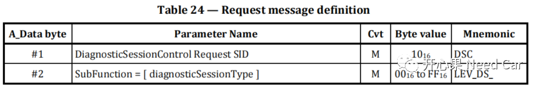
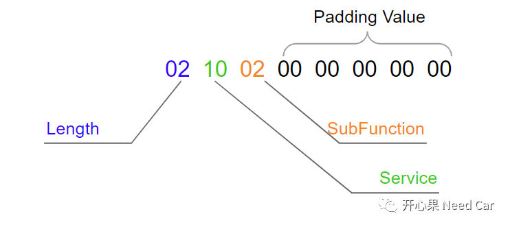
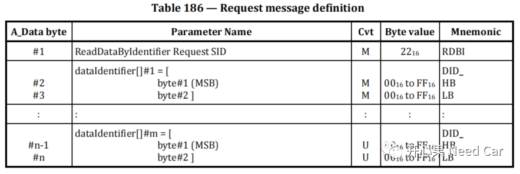
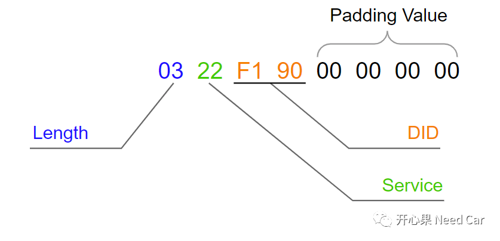
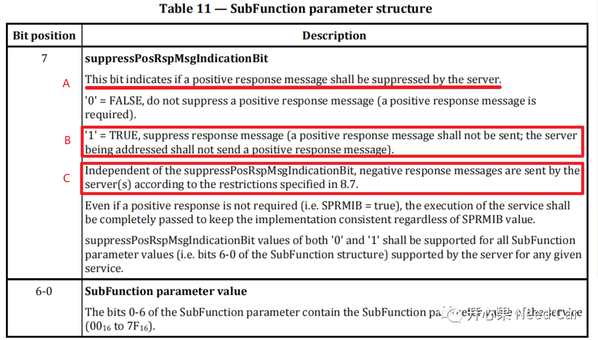
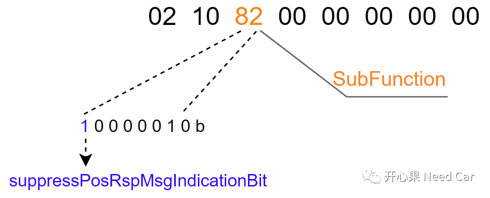
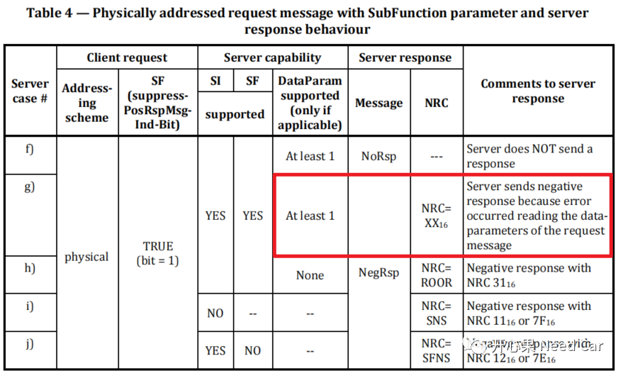
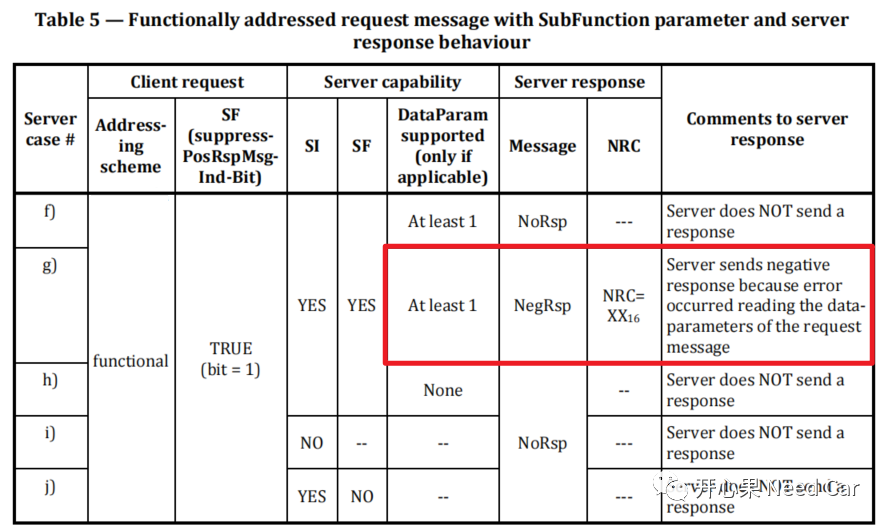
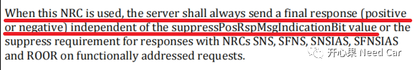
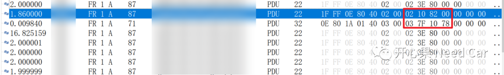

开心果 Need Car · 2023-07-28T08:47:00+08:00 · 微信原文
做汽车诊断开发的工程师应该有这样的体会：诊断虽然不难，但是细枝末节繁杂。即使做了多年诊断工作，依然会有理解不到位的地方。就比如：正响应抑制位（suppressPosRspMsgIndicationBit）。别看这个点不起眼，但是，工程上，发现不少工程师对此一知半解。本文，着重分析suppressPosRspMsgIndicationBit。
1、诊断请求格式
在UDS（Unified Diagnostic Services）协议中，有些诊断服务含有子服务（SubFunction）eg：DiagnosticSessionControl (0x10) service，服务请求格式如下：

对应到具体的数据流，示意如下：

有些诊断服务没有子服务（Without SubFunction）,eg：ReadDataByIdentifier (0x22) service，服务请求格式如下：

对应到具体的数据流，示意如下：

不管服务是否带有子服务，一般来说，诊断交互是一个"乒乓"过程，即：一问一答。当然，这也不是绝对的，有一些工况可以不用回复，而不用回复的这种场景，一般适用于具有子服务的Service。
2、子服务参数结构
既然包含子服务的服务可以不响应诊断请求，Server是如何知道不用回复的呢？答：通过suppressPosRspMsgIndicationBit。搞懂suppressPosRspMsgIndicationBit之前，先看一下SubFunction的参数结构，如下所示：


解读：
A：suppressPosRspMsgIndicationBit用于告知Server（可以看作ECU）是否需要回复正响应（positive response）。
B：当suppressPosRspMsgIndicationBit = 1时，表示Server不用回复正响应。注意：这里只是说正响应不用回复。
C：即使suppressPosRspMsgIndicationBit = 1时，如果Server识别到错误，否定响应（negative response，NRC）需要回复。
所以，suppressPosRspMsgIndicationBit用于抑制Server的正响应，而不是抑制Server的否定响应。
3、功能寻址/物理寻址与suppressPosRspMsgIndicationBit
当suppressPosRspMsgIndicationBit = 1时，物理寻址（Physically addressed）的诊断请求碰到否定响应（NRCxx），需要给出否定响应，如下所示：

当suppressPosRspMsgIndicationBit = 1时，功能寻址（Functionally addressed）的诊断请求碰到否定响应（NRCxx），需要给出否定响应，如下所示：

所以，不管是物理寻址还是功能寻址的诊断请求，suppressPosRspMsgIndicationBit = 1，当Server识别到错误，依然要给出NRC响应。
4、NRC0x78与suppressPosRspMsgIndicationBit
既然suppressPosRspMsgIndicationBit = 1，Server识别到错误，要给出NRC响应，那么NRC = 0x78（requestCorrectlyReceived-ResponsePending）如何处理呢？答：需要给出最终响应，不管最终是正响应还是否定响应，都需要给出。
规范具体解释如下：

5、工程示例

当Server收到10 82请求时，Server由Application跳转到Bootloader程序，这个过程中可能涉及到一些信息的存储或者外设的关闭，耗费的时间过长。所以，可以先给出一个NRC0x78（Response Pending），争取额外时间（eg：5s）。但是，程序跳转到Bootloader需不需要给出最终响应呢？按照UDS规范，显然要给出。但是，考虑到工程实际情况，此问题不会带来严重的安全隐患，不给出最终响应，没啥致命问题，可以申请偏差（甲方同意不同意就看Battle水平了）。但是，从软件实现的角度讲，给出最终响应的实现难度并不大。
往期精彩回顾